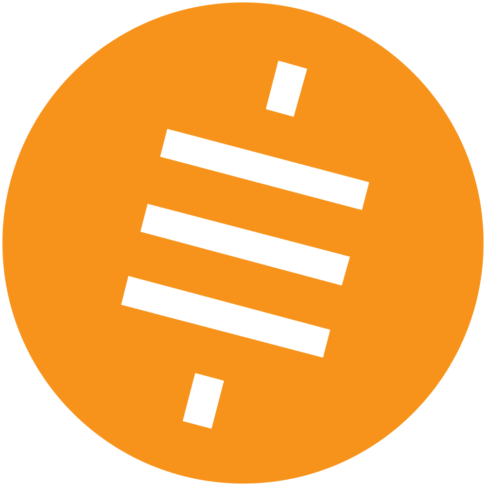

1 Bitcoin = 100,000,000 Satoshis
What is Satoshi?
Satoshi is the smallest unit of Bitcoin, named after its creator, Satoshi Nakamoto.
Satoshi is the smallest unit of Bitcoin, named after its creator, Satoshi Nakamoto.